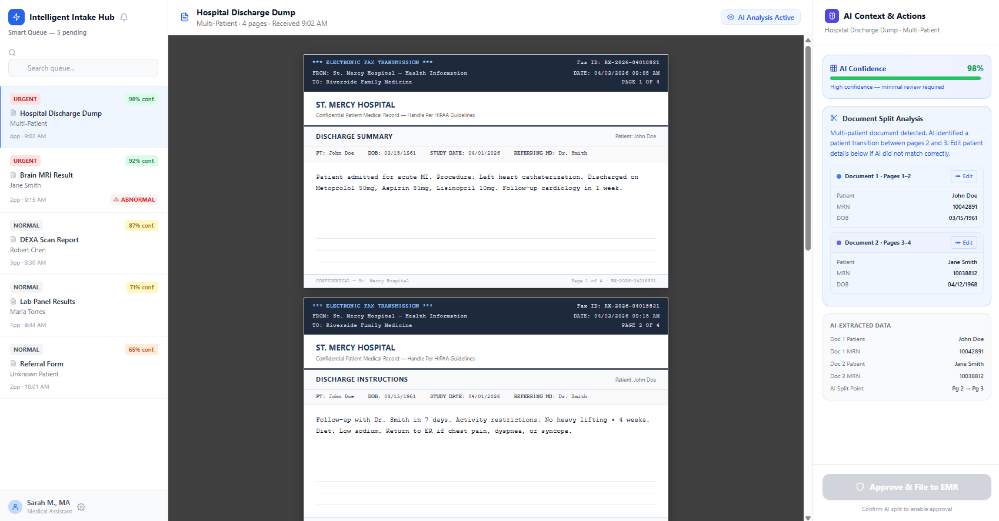

Building clinical technology that care teams actually trust.
13+ years leading product in healthcare technology — from bedside nursing to owning the strategy behind an enterprise value-based care platform. I build at the intersection of clinical reality, AI, and product craft.
Leigha spent seven years in critical care and pediatric emergency nursing before moving into clinical informatics and product — a path that shapes how she builds today: every product decision gets weighed against what actually happens at the point of care.
Over nearly seven years, Leigha grew from an individual-contributor Product Manager into Director of Product for Canopy, an in-house EMR built by Oak Street Health for value-based, ambulatory primary care — scaling the organization from 5 people to more than 40 and, most recently, leading its transition to Epic. She now leads product at Matrix Medical Network, owning CareFlow, the mobile platform clinicians use during in-home assessments.
Along the way she's owned nearly every corner of the platform: early care-coordination tooling for RNs, social workers, and behavioral health teams; medication management; patient access and referrals; and, more recently, the AI/ML models driving risk adjustment and care gap closure. She also built Canopy's Product Operations function from scratch, growing it from a single manager into a six-person team responsible for product analytics, training, and rollout communications org-wide. The case studies below walk through that range in more detail.
Products and initiatives owned across nearly seven years at Oak Street Health. Canopy grew to 10,000+ daily active users, with roughly 3,000 interactions per user.
Oversaw a multi-year ML/LLM model surfacing suspected chronic conditions and risk signals for care teams, supporting risk adjustment and care gap closure at scale. Accountable for the program's strategy and outcomes while a product director led day-to-day delivery.
Rapid build and delivery of a generative AI system that synthesizes incoming unstructured clinical documents — referrals, records, faxes — into structured, actionable data.
Owned the referrals platform, including an eConsult integration with RubiconMD, and led an eConsult-first strategy to resolve more specialist needs internally.
Platform for RNs to document and manage care for patients admitted to the hospital, ensuring timely follow-up and continuity after discharge.
Daily schedule view helping care teams manage day-to-day operations, coordinate within the center, and keep patient throughput on track.
Replaced a paper-based morning huddle process with a real-time tool for care teams to plan and adjust as their day unfolds.
Workflow tooling supporting behavioral health clinicians embedded within care teams.
Workflow tooling for medical social workers coordinating patient needs and community resources.
Led a hybrid build-vs-buy effort integrating a vendor ePrescribing solution with Canopy — a deceptively complex integration given the accuracy required for medication lists and prescribing safety.
Owned the queue of patient-initiated needs and requests coming in through the contact center.
Built and led the Product Operations function from scratch — product analytics, training materials and org-wide trainings, release announcements, and rollout communications.
Led the product team's adoption of AI into day-to-day work — writing requirements, synthesizing research, drafting internal materials, and building prototypes and wireframes — raising the speed and consistency of the team's output.
Core longitudinal patient chart underlying every other Canopy workflow.
Workflow for clinicians to review and sign incoming external documents — labs, imaging, radiology, and admissions records.
Patient scheduling module used by front-desk staff to manage appointments.
Module used by front-desk staff to check patients in, gather updated information, and capture signatures.
Tooling for care teams to build and maintain patient care plans.
Task and follow-up tracking tooling used by care teams across the platform.
Clinical ordering workflows for care teams.
Tooling supporting quality measure tracking and reporting across the platform.
Led product-side strategy for OSH's transition from Canopy, the in-house EMR, to Epic — owning workflow parity, migration prioritization, and change management for care teams through a full platform consolidation.
Beyond strategy — a working prototype designed and built hands-on, start to finish, using AI-assisted development tools.

An AI-powered document intake and triage interface for clinical fax and referral processing — designed and built solo, end to end. Includes a smart queue with AI confidence scoring, automatic multi-patient document splitting, an AI-extracted data review panel, and an approve-to-EMR action flow.
View live prototype →Works in progress outside of my day job — small, real builds for people I know.
An order-ahead website for a friend's custom cookie business: browse the menu, build a bag, and choose a pickup or local drop-off date at checkout. Currently prototyping the design; next up is connecting orders to Google Apps Script so the business can manage them without any new tools.
View the prototype →Outside of Canopy, Leigha's home team is the real priority — her husband, two daughters, and their whippet, Blossom. When they're not chasing a dance or cheer competition schedule, you'll find her deep in a home improvement project, cooking, or unwinding with an audiobook.
Open to product leadership conversations in healthcare and health tech — reach out any time.